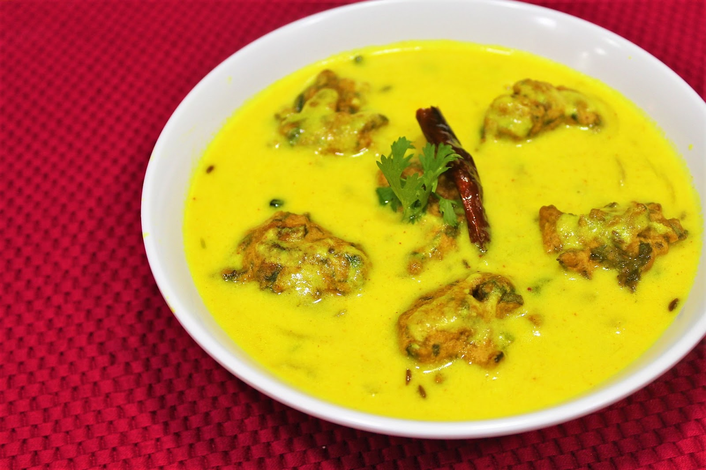
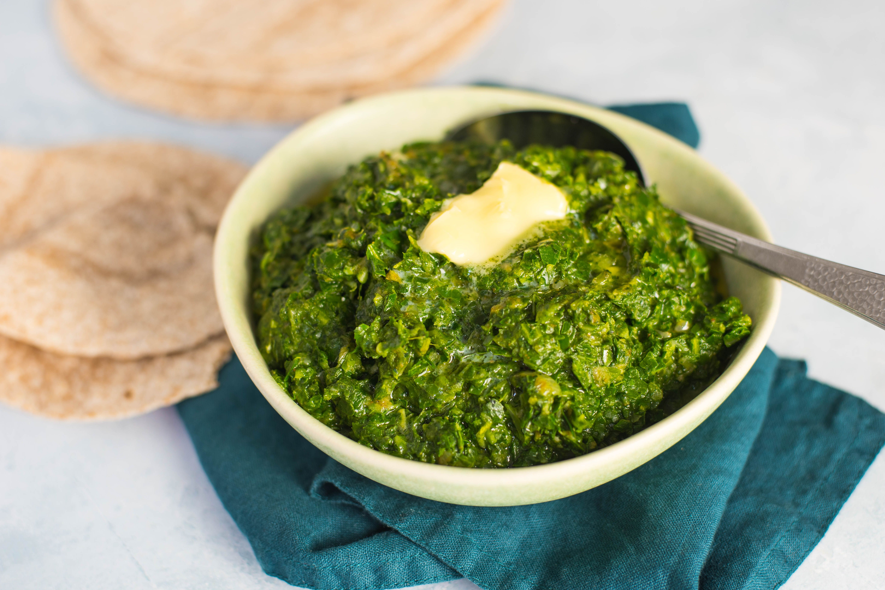

INDER BLOGS

Punjabi Kadhi - A tangy and creamy yogurt-based curry made with chickpea flour dumplings and seasoned with spices.

Chole Bhature - A classic Punjabi dish consisting of spicy chickpeas (chole) served with deep-fried bread (bhature).

Sarson Ka Saag - A traditional Punjabi dish made with mustard greens cooked with spices and served with makki di roti (corn bread).

Paneer Tikka - A popular Punjabi appetizer made with marinated paneer (Indian cottage cheese) grilled to perfection.

Aloo Paratha - A delicious Punjabi stuffed bread made with spiced mashed potatoes and served with yogurt or pickle.

Butter Chicken (Murgh Makhani) - A popular Punjabi dish made with tender chicken cooked in a rich and creamy tomato-based sauce.